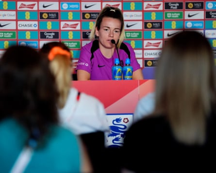

ARSÈNE KNOWS?
The inaugural Copa Gianni jamboree reaches its end game on Sunday as Chelsea and Paris Saint-Germain, two lavishly-backed super clubs based a short Eurostar trip apart, battle to be kings of the global game. PSG have undermined their rivals’ complaints about packed schedules and player fatigue by flying in after Bigger Cup final and destroying better-rested teams. Chelsea, meanwhile, have benefited from a tournament that allows you to simply buy more players as you go – including those on opposing teams – in order to freshen things up. Whatever happens, football will be the winner, but has Copa Gianni been any good?
Asked at the end of June, Jürgen Klopp was unequivocal in his criticism , calling it the worst idea ever implemented in football (and it has some serious competition – Football Daily Ed). Almost two weeks later, Arsène Wenger has bitten back. “I am going to give a very boring answer to a very interesting question,” Wenger told salivating hacks. “Everyone is entitled to an opinion and I don’t share the view of Klopp at all.” With a full fortnight to prepare his riposte, we were expecting a Bielsa-esque PowerPoint takedown, but instead got the kind of unsubstantiated guff that may have earned Wenger the gig as Fifa’s chief of global football development. “If you make enquiries to all the clubs who were here, 100% [would say] they would want to do it again.”
If by clubs, Wenger means the boardroom bean-counters and PSR plate-spinners who oversee things, he may be right. But what about managers, so often the public face of the team? We would ask Botafogo’s Renato Paiva and Porto’s Martín Anselmi what they thought, but they were both sacked for their Copa Gianni failures (which, in Paiva’s case, included beating PSG). How did Pep Guardiola enjoy Manchester City’s daring run to the last 16? “Maybe [in winter] it will be a disaster, we are exhausted and [Copa Gianni] has destroyed us,” trilled Guardiola. Well, at least his players enjoyed it, right? “My teammates are not exactly overjoyed about the tournament,” said Manuel Akanji, who joined the rest of City’s back line in downing tools against Al-Hilal.
Wenger also took on the issue of low fan turnout, saying “we believe the attendances were projected as low and in reality were much higher,” while squinting up at an empty stand as invisible to him as a contentious decision in Arsenal’s favour. “We shouldn’t underestimate the quality of the permanent pitches,” he added, rubbing a scorched blade of grass between forefinger and thumb. “The grass is a bit harsher here. The pitches were flat. But once we watered the grass, everyone was happy.” Apart from PSG’s Luis Enrique, of course, who complained of playing surfaces “full of holes” that made the ball “jump around like a rabbit”.
And what about the heat, which made it “almost impossible to train,” according to Chelsea head coach Enzo Maresca? Well, it turns out he was doing the training wrong. “I asked our analysts to analyse the impact of the heat,” Wenger added, while stuffing party packs of ice cubes inside his extra-long puffer jacket. “We found heat of over 35C had an impact on high-speed running, so sprints, not distances.” So, it’s simple – to succeed in this tournament, or next year’s Stay Away World Cup, players need to stop running. After all it’s not like this is an elite competitive sport, right? Wenger’s verdict may be good news for Cole Palmer, but it also proves the Copa Gianni – recently described as a “wake-up call” for player welfare – is a marathon, not a sprint.
LIVE ON BIG WEBSITE
It’s the final round of Group B fixtures, with Portugal needing to gain three points and several goals to overhaul Italy in second place. Join us for Italy 1-4 Spain and Portugal 3-1 Belgium to see how it all shakes down (both 8pm BST kick-offs).
QUOTE OF THE DAY
It is great to see and it’s proof that women’s footballers are great, and that is the way that game is going, so long may that continue” – England’s Lauren Hemp weighs in on the news that Arsenal will make Canada forward Olivia Smith the first £1m signing in the women’s game, as revealed in a Big Website exclusive on Thursday.
Lauren Hemp meets the press in Zurich.Photograph: Nick Potts/PA
FOOTBALL DAILY LETTERS
Re: John Terry’s revelation in yesterday’s Daily that he would not have played against his old muckers at Chelsea left me pondering the eternal existential question with JT. Would he have sat on the bench in his full Aston Villa kit regardless?” – Justin Kavanagh.
Sir Alex Ferguson was not afraid to dispense with David Beckham and Cristiano Ronaldo to rebuild Manchester United. Xabi Alonso has a similar task if he is to take Real Madrid back to the lofty heights that they are used to. Will he?” – Krishna Moorthy.
Perhaps David Mack ( Thursday’s letters ) should also have told Bryan Evans, Frankie Dodds and Barry Glendenning that the M1 (Republic of Ireland version) only starts at the Turnapin Interchange [OK, that’s enough of that – Daily Ed]” – Frank Derwin.
Send letters to the.boss@theguardian.com . Today’s prizeless letter o’ the day winner is … Justin Kavanagh. Terms and conditions for our competitions can be viewed here .
- This is an extract from our daily football email … Football Daily. To get the full version, just visit this page and follow the instructions .